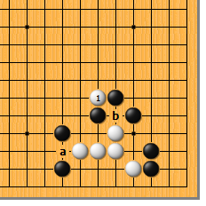
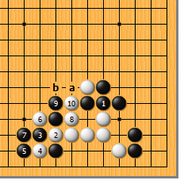
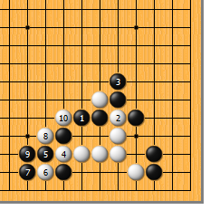
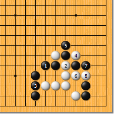
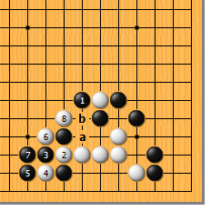
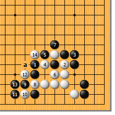
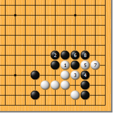

|  |  | |
| 图1 白1嵌，堪称妙手！既瞄着a位的冲，又瞄着b位的断，正是所谓“一石二鸟”、“后发制人”的手段。 | 图2 黑1如粘，白2可冲。以下变化到白10冲时，黑不可a位挡，否则白将b位双打。如此，白可扬长而去。
| |
|
 |
 | |
图3 黑1如退，白2断。黑如3位长防右边的毛病，白4冲、6断、8、10连打，黑就接不上了。
| 图4 前图的黑3如不顾右边的毛病而于本图3位硬粘，白4、6连打后再于8位冲，黑挡不上。 | |
|
 |
 | |
图5 黑即使于1位打吃，白2至8的手段仍然成立。黑如敢a位逃，白b位追打，结果是“接不归”。先前嵌入的一子威力犹存。
| 图6 黑1并，非常顽强。白2断，先手。黑3粘时，白4抱吃，黑虽可5、7勉强包住，白8冲、10断、12打，再14断吃时，黑崩溃。即使黑提劫，白仍可于a位吃“倒扑”。 | |
|  | 您的高见 | |
图7 白1冲，缺乏计算。黑2粘，一手补净左边的所有缺陷，白3冲、5打、7立时，黑8贴，白明显不行。 |